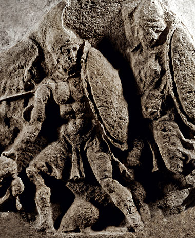

Thực hiện lời hứa với nữ thần Thétis, thần Zeus sai thần Giấc mộng giáng xuống một giấc mộng dối lừa vào lúc Agamemnon đang ngủ say. Agamemnon thấy một người đến nói với mình những lời lẽ chân tình sau đây:
- Này hỡi, người con của Atrée dũng cảm! Làm sao mà một vị thủ lĩnh tối cao được ba quân tín nhiệm, một vị thủ lĩnh lúc nào cũng bận tâm lo lắng đến sứ mạng của cuộc chiến tranh thần thánh này, lại có thể ngủ yên, ngủ say được đến thế. Thần Zeus luôn luôn quan tâm lo lắng đến thắng lợi của quân Hy Lạp đã sai ta đến đây để truyền báo cho ngươi biết một thời cơ thuận lợi. Các vị thần trên đỉnh Olympe hiện nay không còn chia ra hai phe như trước nữa. Cả thần Apollon, nữ thần Aphrodite cho đến thần Chiến tranh-Arès đều đã quy thuận nữ thần Héra. Tai họa đang treo lơ lửng trên đầu quân Troie. Vậy nhà ngươi hãy mau mau chỉnh đốn cơ ngũ, điểm tướng duyệt binh, chớp cơ hội tất mà tiến quân hạ thành. Vì việc thiên đình cơ mật, ngươi khá nhớ kỹ trong lòng, chớ để lộ thiên cơ mà mang họa.
Tỉnh dậy, Agamemnon rất đỗi vui mừng. Ông triệu tập Hội đồng Tướng lĩnh thuật lại giấc mộng đêm qua và mời lão vương Nestor giải đoán mộng triệu. Không còn nghi ngờ gì nữa, lão tướng khuyên Agamemnon hãy theo lời thần dặn. Agamemnon bèn ra lệnh triệu tập Đại hội Toàn quân. Trước toàn thể ba quân, gươm giáo sáng ngời, Agamemnon bỗng nảy ra ý định thử lòng binh sĩ. Nhẽ ra ông cổ vũ mọi người sẵn sàng quyết chiến trong những trận đánh mới mà ông vừa được thần Zeus báo mộng cho biết thời cơ thuận lợi đã đến thì ông lại lên tiếng than thở trước binh sĩ về nỗi chiến tranh đã kéo dài, quá hao người tốn của mà vẫn không thấy hy vọng giành được thắng lợi: “Thành Troie vẫn bền vững hùng cường trấn giữ một góc trời Đông. Như vậy thần Zeus đã lừa dối chúng ta, không thực hiện lời hứa với chúng ta. Chín năm đã trôi qua, trong khi đó vợ con chúng ta ở nhà mỏi mắt trông chờ, ruộng vườn của chúng ta bỏ hoang không người cày cấy”, và Agamemnon kêu gọi:
- Vậy hỡi anh em binh sĩ! Chúng ta hãy kéo thuyền xuống biển, nhổ trại, lên đường trở về quê hương. Về đi thôi, thành Troie không thể nào hạ được. Số mệnh chẳng ban cho chúng ta vòng nguyệt quế. Chúng ta chẳng thể hạ được thành Troie.
Agamemnon nói thử lòng binh sĩ như thế những tưởng binh sĩ sẽ phản kháng lại ý định của mình, những tưởng sẽ kích thích được tinh thần chiến đấu của binh sĩ. Nhưng không, vừa nghe Agamemnon nói xong, tất cả đoàn quân hò reo vang trời mừng rỡ, rùng rùng chuyển động lao ra bờ biển giống như một cánh đồng lúa chín rộ nổi sóng khi được một cơn gió Tây thổi. May thay nữ thần Athéna vâng lệnh người vợ uy nghi có cánh tay trắng muốt của thần Zeus xuống ngay doanh trại quân Hy Lạp nơi Hội nghị toàn quân, ra lệnh cho Ulysse phải ngăn chặn ngay cảnh hỗn độn ấy. Ulysse lập tức chạy ra bờ biển cản mọi người lại. Chàng kêu gọi anh em binh sĩ trở về quảng trường ngồi họp trật tự để nghe ý kiến của mọi người. Phải vất vả lắm chàng mới lập lại được trật tự. Nhưng Thersitès, một tên lính xấu xí nhất trong những người lính Hy Lạp tham dự cuộc viễn chinh vẫn gây rối. Đầu thì nhọn hoắt, mắt lác, chân thọt, ngực lép, vai so, người xấu làm sao thì tính nết xấu làm vậy. Thersitès là một kẻ chứa đầy trong tim những ý nghĩ bậy bạ lại có thói quen cãi bướng với các tướng lĩnh uy nghiêm. Hắn cứ xúi giục mọi người bỏ họp. Hắn đứng lên công kích chủ tướng Agamemnon, chỉ trích Ulysse. Hắn kêu gọi mọi người phản chiến bãi binh, kéo thuyền xuống biển để trở về quê hương với gia đình, vợ con. Ulysse tức giận tiến đến bên hắn dùng cây vương trượng giáng cho hắn một đòn, bắt hắn phải ngồi xuống và im lặng. Toàn thể binh sĩ đồng thanh hô vang tán thưởng hành động trừng trị của Ulysse và cười rộ lên khoái chí khi thấy Thersitès bị đánh, phải câm miệng và thui lủi ngồi xuống.
Ulysse kêu gọi mọi người hãy kiên trì cuộc vây đánh thành Troie. Chàng nhắc lại điềm báo của thần thánh khi quân Hy Lạp tập trung ở cảng Aulis, và bây giờ là năm thứ mười có nghĩa là cuộc Chiến tranh Troie sắp kết thúc thắng lợi. Lão vương Nestor tiếp tục đứng lên kêu gọi binh sĩ Hy Lạp hãy giữ vững lời thề hứa của mình, chiến đấu cho đến khi hạ được thành Troie. Cụ khuyên Agamemnon hãy mau mau tổ chức lại đội ngũ, phân loại tướng sĩ để chuẩn bị bước vào cuộc giao tranh. Đại hội Binh sĩ kết thúc bằng những lời kêu gọi của Agamemnon. Quân Hy Lạp reo vang, tản về doanh trại, giết súc vật làm lễ hiến tế và mở tiệc động viên toàn quân trước khi khai chiến.
Quân Hy Lạp và quân Troie tiếp tục cuộc giao tranh sau một thời gian tạm nghỉ. Hai bên điểm binh dàn trận. Binh hùng tướng giỏi, khiên giáp sáng ngời, chiến xa náo nức xung trận, ngựa hý vang trời. Hai đoàn quân rầm rập xông lên phía trước. Nếu đứng trên một ngọn núi cao quan sát cảnh xung trận của hai đoàn quân, ta chỉ thấy hai cơn lốc bụi khổng lồ đang cuộn xoáy ầm ầm mãnh liệt, đang từng giây từng phút sáp lại gần nhau.
Paris đi đầu hàng quân Troie khí thế hùng dũng, oai nghiêm tựa một vị thần. Chàng khoác trên người một tấm da báo, lưng đeo cung, và bên sườn một thanh kiếm. Trên tay chàng hai ngọn lao đồng sắc nhọn nhăm nhăm bay vút vào địch thủ nào dám đối mặt đương đầu. Ai là người trong hàng ngũ quân Hy Lạp dám chấp nhận sự thử thách này. Lập tức Ménélas tiến lên khỏi hàng quân. Chàng từ trên chiến xa tung mình nhảy xuống và bước đi những bước dài hùng dũng nhưng bình tĩnh, thoải mái. Thấy khí thế của chàng, người ta chỉ có thể nói đó là một con sư tử. Khi Paris trông thấy Ménélas tách ra khỏi hàng quân với khí thế như vậy thì trong lòng bủn rủn, sợ hãi. Chàng không đủ can đảm để chấp nhận cuộc giao tranh. Chàng quay đầu bỏ chạy. Hector thấy vậy nổi giận, mắng đứa em hèn nhát của mình thậm tệ. Paris đáp lại:
- Hỡi Hector kính mến! Em không trách cứ gì về việc anh nổi nóng với em. Những lời anh nói là rất phải. Trái tim anh bao giờ cũng rắn rỏi, dứt khoát khiến cho người ta tưởng như được thấy ngay trước mắt một cây rìu mạnh trong tay một người thợ giỏi đang bổ xuống cây gỗ, đẽo gọt cho thành một con thuyền. Tuy nhiên anh chưa hiểu ý em. Em muốn giao đấu, nhưng giao đấu chỉ với Ménélas thôi. Anh hãy ra lệnh cho quân sĩ hai bên ngồi xuống thành hai tuyến. Vũ khí đồng và bạc vàng châu báu đặt xuống trước mặt. Em và Ménélas sẽ giao đấu. Ai thắng người đó sẽ giành được nàng Hélène và của cải, và hai bên sẽ cam kết từ nay trở đi sống với nhau trong tình bằng hữu. Chúng ta, những người Troie sẽ an cư lạc nghiệp trên vùng đồng bằng phì nhiêu của mình. Còn họ những người Achéens và những người Argos sẽ xuống thuyền trở về với mảnh đất mẹ hiền đã nuôi dưỡng họ.
Nghe Paris nói như vậy, Hector rất đỗi vui mừng. Chàng bèn tiến lên trước hàng quân ra lệnh cho quân Troie ngồi xuống. Nhưng quân Hy Lạp lúc này vẫn đang ở trong tư thế sẵn sàng chiến đấu. Những cánh cung giương lên nhằm vào Hector, những ngọn lao nhăm nhăm phóng vào Hector, những dũng sĩ chỉ chờ lệnh là ném những trận mưa đá vào Hector. Thấy vậy, chủ tướng Agamemnon bèn hét lên, tiếng sang sảng như đồng:
- Hỡi anh em binh sĩ! Hãy dừng lại! Dừng lại! Không được khai chiến khi chưa có lệnh của ta! Hector có điều gì muốn nói với chúng ta đấy.
Quả vậy, khi quân Hy Lạp tuân theo lời của chủ tướng mình thì Hector tiến lên đứng giữa hai đạo quân cất tiếng. Chàng nói to dõng dạc cho quân sĩ hai bên biết ý định của Paris. Mọi người lắng nghe chăm chú đến nỗi không có một tiếng động, một tiếng xì xào. Nghe Hector nói xong, Ménélas tán thành ngay ý định dùng cuộc đấu tay đôi để chấm dứt chiến tranh. Như vậy vừa chóng vánh vừa đỡ hao binh tổn tướng cho cả đôi bên. Tuy nhiên Ménélas tỏ ra không tin lắm vào những lời Hector vừa nói. Chưa hẳn những người Troie đã có thiện chí muốn chấm dứt chiến tranh như vậy. Phải đòi lão vương Priam với đây làm lễ thề nguyền cam kết, bởi vì chỉ có thể tin vào cụ được thôi. Chỉ có cụ mới đáng tin, chứ những người con trai của cụ thì vốn là không trung thực và kiêu ngạo. Ménélas vừa dứt lời thì quân sĩ hai bên lòng tràn ngập niềm vui, xôn xao chẳng khác gì những hoa lá cỏ cây được gió xuân thổi tới. Mọi người hạ vũ khí xuống đất chuẩn bị cho lễ thề nguyền. Hector cử ngay hai viên truyền lệnh tâm phúc phi ngựa về thành. Một viên mời Priam ra trận tiền để làm lễ thề nguyền cam kết. Một viên lấy các lễ vật ra để làm lễ hiến tế. Agamemnon cũng vậy, không chậm trễ, chàng phái ngay một vị tướng tâm phúc về doanh trại nơi ác chiến thuyền nằm nghỉ trên bãi cát trắng dài, để truyền lệnh đem lễ vật ra trận tiền làm lễ hiến tế.
Sau khi lễ thề nguyền được cử hành rất trọng thể và trang nghiêm, hai bên bèn chuẩn bị cho cuộc đấu tay đôi. Hector đại diện cho quân Troie và Ulysse đại diện cho quân Hy Lạp thân hành đi đo đạc đấu trường. Tiếp đó là lễ rút thăm xem ai được phóng ngọn lao đồng trước. Thật vô cùng hồi hộp. Quân sĩ hai bên đều giơ tay lên trời cầu khấn các vị thần phù hộ. Dũng tướng Hector đội mũ trụ lấp lánh cầm một chiếc mũ đồng trong đựng hai miếng đồng tượng trưng cho hai số phận của hai đối thủ, giơ cao lên cho mọi người trông thấy. Rồi chàng quay mặt đi phía khác, lắc mạnh cái mũ. “Số phận” Paris nhảy bật ra ngoài. Thế là Paris được quyền đánh trước.
Paris tiến ra đấu trường. Ménélas cũng chẳng chậm trễ. Paris nai nịt gọn gàng, oai phong lẫm liệt thế nào thì Ménélas cũng chẳng hề thua kém. Nhìn hai vị dũng tướng đứng giữa hai hàng quân chờ lệnh giao đấu thật là khủng khiếp. Họ nhìn nhau hằm hằm, nảy lửa. Răng nghiến chặt. Mặt đanh lại lạnh lùng. Có lệnh truyền cho hai người tiến đến chỗ quy định. Cuộc giao đấu bắt đầu.
Paris phóng lao. Ngọn lao đồng nhằm thẳng người Ménélas bay tới. Nhưng Ménélas kịp thời đưa khiên ra đỡ. Ngọn lao không xuyên thủng được chiếc khiên dày rắn chắc, mũi lao chùn lại và rơi xuống đất.
Đến lượt Ménélas. Chàng ngả người ráng sức phóng ngọn lao sắc nhọn của mình. Ngọn lao to chắc, bay thẳng đến Paris xuyên qua chiếc khiên và đâm thủng chiến áo giáp. Nhưng chính lúc đó, Paris cúi gập người xuống nên ngọn lao không thể xuyên sâu hơn được nữa, do đó Paris thoát chết. Trong khi Paris chưa kịp hoàn hồn thì Ménélas rút luôn kiếm bên sườn lao tới. Chàng bổ kiếm xuống đầu Paris. Nhưng lưỡi kiếm chạm phải chiếc mũ đồng rắn chắc bật nảy lên khỏi tay Ménélas và gãy vụn làm thành ba bốn mảnh. Ménélas liền nhảy một bước đến sát Paris nắm lấy chiếc ngù đuôi ngựa ở trên chiếc mũ đồng xoắn xoắn mấy vòng rồi ra sức kéo thật mạnh với hy vọng lôi Paris về phía quân Hy Lạp. Paris bị kéo, chiếc quai mũ dưới cằm căng ra thít vào cổ làm chàng ngạt thở. Tình hình thật nguy khốn. May thay nữ thần Aphrodite kịp thời đến ứng cứu. Nàng bèn làm cho chiếc quai mũ bền đẹp bằng da bò đứt phựt một cái. Ménélas mất đà suýt ngã. Chàng quăng chiếc mũ lại cho quân lính của mình ngồi ở phía sau và nhặt ngọn lao đồng ở dưới đất xông vào địch thủ. Nhưng nữ thần Aphrodite đã đưa địch thủ của chàng đi. Nàng hóa phép làm ra một đám sương mù dày đặc che phủ chiến trường và đưa Paris trở về thành Troie trong đám sương mù ấy.

Vào lúc đó, trên đỉnh Olympe, thần Zeus triệu tập các vị nam thần, nữ thần tới họp trong cung điện vàng. Thần Zeus nêu ra chủ kiến của mình là muốn chiến tranh kết thúc bằng cách bắt Paris trả lại nàng Hélène cho Ménélas, và thần rất hài lòng về cách giải quyết cuộc chiến tranh bằng biện pháp cho đấu tay đôi. Nhưng nữ thần Héra và Athéna một mực chống lại. Nữ thần Héra muốn cho thành Troie phải sụp đổ, và quân Hy Lạp phải giành được một chiến thắng trọn vẹn, lẫy lừng. Nàng đòi người chồng đầy quyền uy của mình phải giao cho nữ thần Athéna khơi lại cuộc chiến tranh, phá vỡ định ước giải quyết cuộc tranh chấp bằng cách đấu tay đôi. Nữ thần Athéna sẽ xúi giục quân Troie vi phạm những lời cam kết thề nguyền để những người Hy Lạp nổi giận tung quân vào giao chiến. Thần Zeus đành phải nhượng bộ người vợ xinh đẹp có đôi mắt bò cái của mình và nữ thần Athéna mắt cú mèo.
Được Zeus gật đầu ưng thuận, lòng dạ nữ thần Athéna sôi sục hẳn lên. Nàng bay xuống hàng ngũ quân Troie, giả dạng làm một người trần thế, chàng Laodoque, một chiến sĩ danh tiếng, con của lão vương Anténor. Dưới hình dạng Laodoque, nữ thần tìm đến gặp dũng sĩ Pandaros một con người có sức mạnh như thần và bằng những lời lẽ dịu dàng và ngon ngọt, nữ thần xúi giục Pandaros bắn một mũi tên vào Ménélas. Bị những lời phỉnh nịnh về vinh quang và phần thưởng, Pandaros người dũng sĩ nổi danh vì tài bắn cung (xưa kia chàng được thần Apollon truyền dạy cho nghệ thuật khó khăn này) đã bắn một phát tên trúng bụng Ménélas. Thế là định ước đấu tay đôi để phân thắng bại trong cuộc chiến tranh kéo dài tới năm thứ mười bị phá vỡ.
Tổng Chỉ huy Agamemnon thấy Ménélas bị thương, máu chảy đỏ lòm bèn hô hoán mọi người đến cứu chữa. Ông cho mời vị danh y Machaon con trai của vị thần Asclépios tới xem xét vết thương cho Ménélas. Tình hình xảy ra như thế thật là tồi tệ. Người Troie đã không tôn trọng những điều họ thề nguyền cam kết. Như vậy chỉ có nghĩa là họ muốn tiếp tục cuộc giao tranh. Agamemnon đi đến doanh trại từng đạo quân, gặp các tướng sĩ để bàn bạc kế sách đối phó với quân Troie. Các vị tướng ai nấy đều nhất quyết phải mau chóng duyệt lại binh mã rồi ra lệnh xuất quân, hỏi tội bọn người Troie ăn gian nói dối, lừa lọc phản bội, và thế là chiến tranh lại tiếp diễn với quy mô to lớn như cũ.